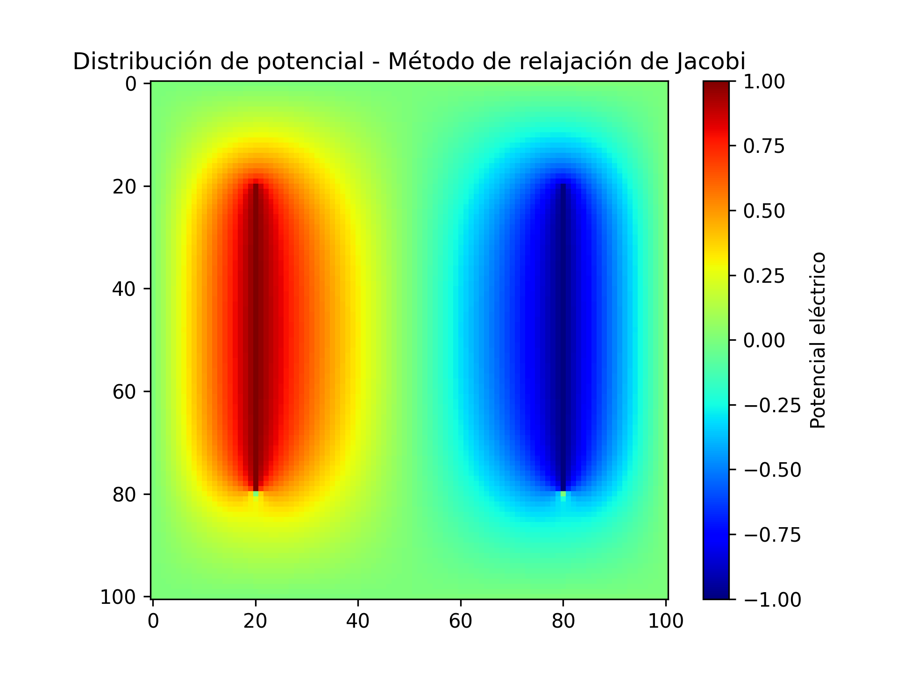

Tutorial
En esta parte nos centraremos en un efonque orientado al aprendizaje. Aprenderemos como instalar las bibliotecas a utilizar y como implementar el método de relajacion, sobre-relajacion de Jacobi, además de implementar el método de Gauss-Seidel en Python y en C++.
Requisitos previos
Antes de comenzar necesitamos tener instalado la siguiente biblioteca en nuestro entorno de python:
pip instal numpy
pip install matplotlib
Paso 1: Configuramos el entorno
Abrimos el editor de código vim y creamor el nuevo archivo de python.
Por ejemplo, lo llamamos jacobi.py
Paso 2: Importamos bibliotecas
Comenzamos importando las bibliotecas requeridas para el código
import numpy as np
import matplotlib.pyplot as plt
import matplotlib.cm as cm
Paso 3: Definimos la función que retornara el método de Jacobi
def jacobi_relaxation(L, M, V_p, V_n, tolerance):
# Primero creamos los arreglos 2-dimensionales de la grilla
# Vamos a necesitar dos según la regla de Jacobi
# Note que usamos M+1, debido a que debemos contener la condición de frontera
# phi contiene inicialmente los valores iniciales. Vamos a utilizar ceros.
phi = np.zeros((M + 1, M + 1), dtype=float)
# --- Calculamos la reposición dependiendo del valor de M
fil_start = int((2 * M) / L) # 2 cm desde arriba
vol_len = int((6 * M) / L) # 6 cm longitud de la barra
fil_end = fil_start + vol_len
col_plus = int((2 * M) / L) # voltaje positivo a 2 cm del borde izquierdo
col_neg = col_plus + vol_len # Voltaje negativo a 2 cm del borde derecho
# Ahora tenemos que colocar la condición inicial.
# Recuerde accesos de listas en np.ndarray
phi[fil_start:fil_end, col_plus] = V_p
phi[fil_start:fil_end, col_neg] = V_n
# phiprime se necesita para la iteración
phiprime = np.zeros((M + 1, M + 1), dtype=float)
# Iteración de Jacobi
delta = 1.0
its = 0
while delta > tolerance:
# Calculamos la iteración
its += 1
for i in range(M + 1):
for j in range(M + 1):
if j == col_plus and fil_start <= i <= fil_end or j == col_neg and fil_start <= i <= fil_end:
phiprime[i, j] = phi[i, j]
# Condición de frontera
elif i == 0 or i == M or j == 0 or j == M:
phiprime[i, j] = phi[i, j]
# Iteración principal
else:
# COMPLETE AQUÍ
phiprime[i,j] = 0.25 * (phi[i + 1, j] + phi[i - 1, j] + phi[i, j + 1] + phi[i, j - 1])
# Calculamos la diferencia máxima con respecto a los valores anteriores
delta = np.max(np.abs(phi - phiprime))
# Ahora intercambiamos los arreglos para la nueva iteración
# El nuevo phi es el phiprime
temp = phi
phi = phiprime
# El nuevo phiprime es el phi viejo
phiprime = temp
return phi, its, delta
Paso 4: Llamado a la función
En esta parte escribimos el llamado a la función para almacenar los resultados en nuevas variables y poder realizar la impresión en pantalla
jacobi_vals, iterations, error = jacobi_relaxation(10, 100, 1.0, -1.0, 1e-5)
print(f"Convergencia alcanzada en {iterations} iteraciones con error {error:.2e}")
Paso 5: Ejecutamos el código
guardamos el archivo de jacobi.py y lo ejecutamos - primero añadimos permisos de ejecución:
chmod +x jacobi.py
./jacobi.py
Paso 6: Graficar
Escribimos el código a utilizar para realizar la gráfica esperada
plt.imshow(jacobi_vals, cmap='jet') # Aplicar colormap explícitamente
plt.colorbar(label='Potencial eléctrico') # Añadir barra de color con etiqueta
plt.title('Distribución de potencial - Método de relajación de Jacobi')
plt.savefig('Jacobi.png', dpi=300) # Guarda la imagen con buena resolución
plt.show()
Gráfica:
